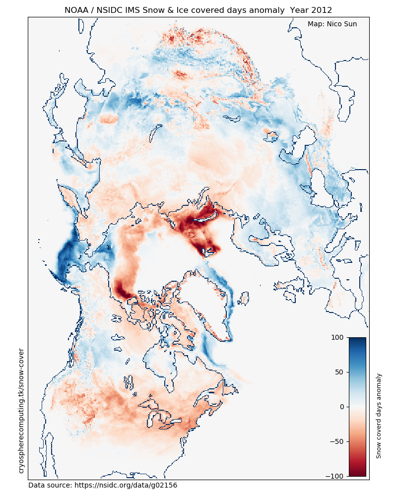

Snow Covered Days
Total number of days a gridcell is snow or ice covered.

Select individual years with the slider to view the difference with the long term mean shown on the right. The baseline for anomaly calculation is 1998-2018

Data used
National Ice Center. 2008, updated daily. IMS Daily Northern Hemisphere Snow and Ice Analysis at 1 km, 4 km, and 24 km Resolutions, Version 1.1-1.3. Boulder, Colorado USA. NSIDC: National Snow and Ice Data Center. doi: https://doi.org/10.7265/N52R3PMC.